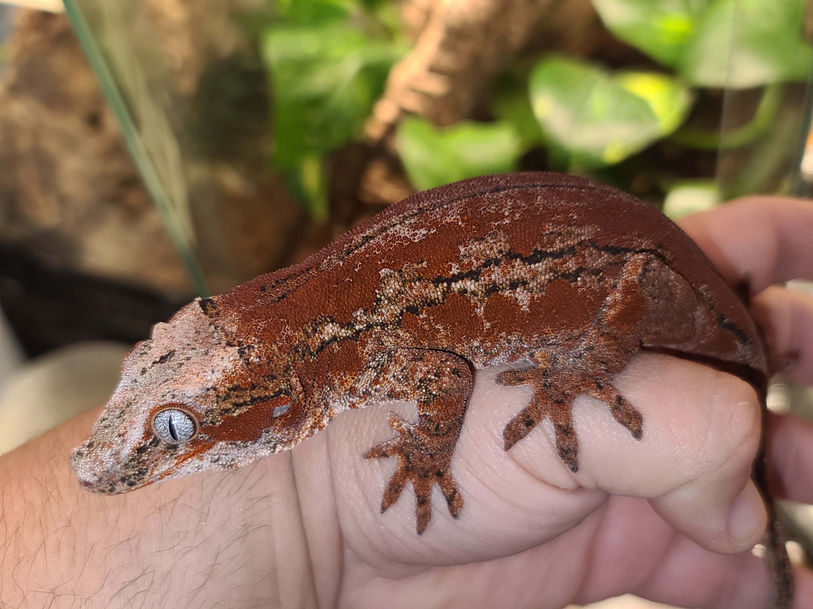

Gargoyle Gecko
Rhacodactylus auriculatus

| Species | Difficulty Level | Size |
|---|---|---|
| Gargoyle Gecko | Beginner | 7-10 in |
| Crested Gecko | Beginner | 7-9 in |
| Chahoua Gecko | Intermediate | 8-12 in |
Natural Habitat
Gargoyle geckos are native to the Grand Terre island, this is the largest Island of New Caledonia. these geckos inhabig forests, shrub lands, and areas with dense vegetation. They like to climb branches and hide amongst the leaves of local flora. Gargoyle geckos have two prominent bumps on their head that gives them their namesake.
Humidity and Water
Gargoyle geckos require humidity to be around 60%-80%. This can be accomplished with frequent mistings. there should be a drying off period so that the gecko does not face any possible health problems. A water dish should always be offered, so that the gecko can drink water as needed.
Feeding Habits
Gargoyle geckos are hebivores focusing on eating decaying fruit matter as well as insects and even small lizards. They are even known to eat crested gecko babies. At home they can be fed a prepared crested gecko died. A popular brand of food is Repashy and Pangea. Gargoyle geckos require a little bit more protein so the formuluations that focus on protein are important. Gargoyle geckos can also be fed various insects, such as crickets, hornworms(captive bred ones), superworms, dubia roaches, and other insects. Though, some people report that their gargoyle geckos do not take fondly to insects.
Breeding
Gargoyle geckos are able to be bread but humidity needs to be consistenly high, around 70%-80% to mimic the breeding season of gargoyle geckos. Gargoyle gecko should not be bred until they reach the age of two or three years old, so that they can be of a safe age and not be at risk of being malnurished while being gravid.
If you would like a more detailed explanation on gargoyle gecko care, or would like additional information on other reptiles please visit this More information